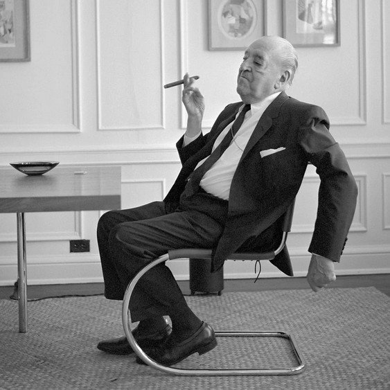

La postura rivela molto sullo stato emotivo e mentale di una persona, influenzando anche la percezione degli altri sulla sua fiducia e apertura.
La postura del corpo comunica emotività e personalità: sedersi dritti denota attenzione, inclinarsi in avanti può indicare distrazione. Una postura aperta esprime cordialità, mentre una chiusa suggerisce ostilità o ansia. Quindi, anche il modo in cui teniamo il nostro corpo può costituire una parte importante del linguaggio del corpo.